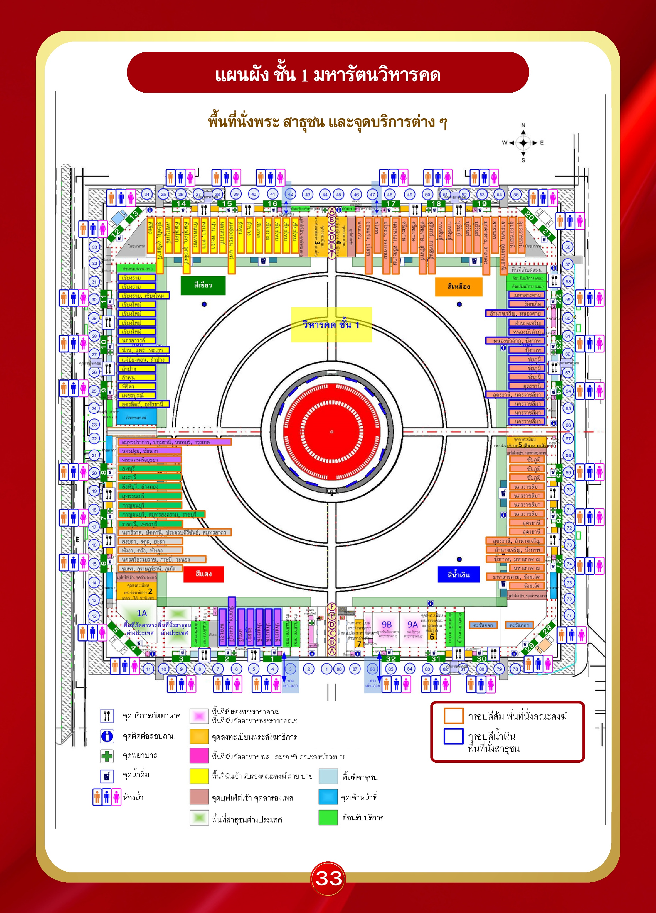

แผนผัง ชั้น 1 มหารัตนวิหารคด — พื้นที่นั่งพระ สาธุชน และจุดบริการต่างๆ
หน้า 33
จุดติดต่อสอบถาม
คนหาย · ของหาย · คนพลัดหลง · สอบถามได้ทุกเรื่อง — มี 16 จุด รอบวิหารคด
| ลำดับ | คอร์ | เสา |
|---|---|---|
| 1 | คอร์ 1 | A2 |
| 2 | คอร์ 2 | F6 |
| 3 | คอร์ 4 | A11 |
| 4 | คอร์ 7 | F17 |
| 5 | คอร์ 10 | F27 |
| 6 | คอร์ 13 | A34 |
| 7 | คอร์ 15 | F39 |
| 8 | คอร์ 17 | A45 |
| 9 | คอร์ 18 | F50 |
| 10 | คอร์ 22 | A57 |
| 11 | คอร์ 23 | F62 |
| 12 | คอร์ 24 | A66 |
| 13 | คอร์ 26 | F71 |
| 14 | คอร์ 29 | A78 |
| 15 | คอร์ 31 | F83 |
| 16 | คอร์ 32 | A87 |
